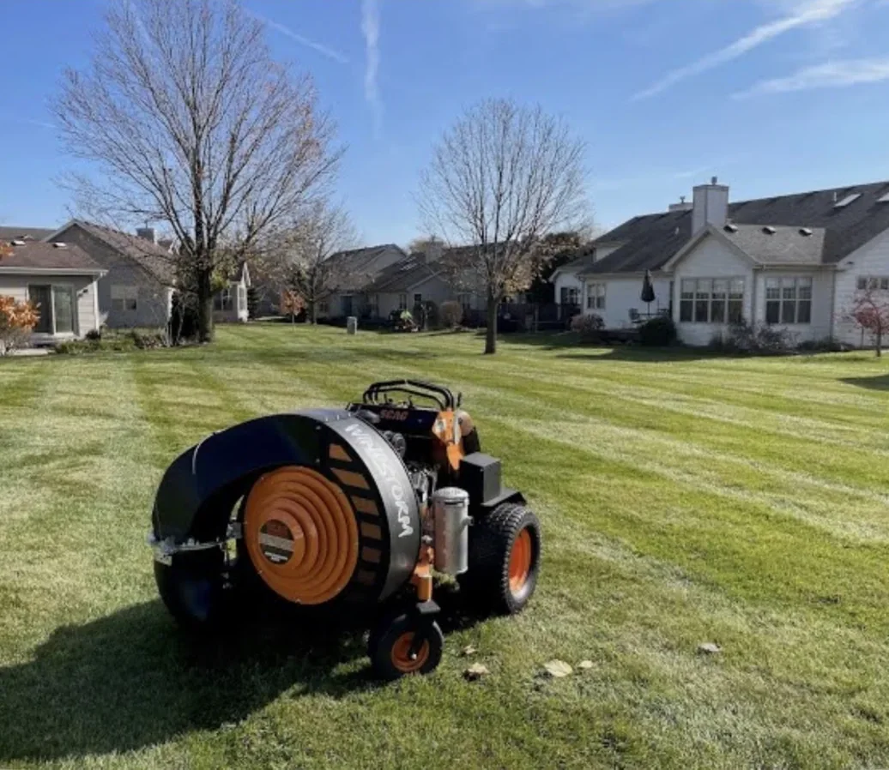
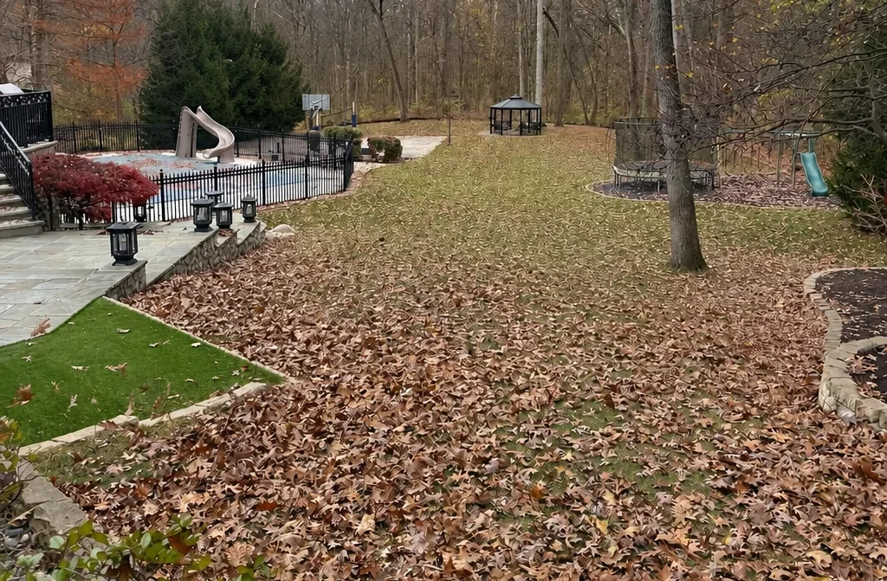
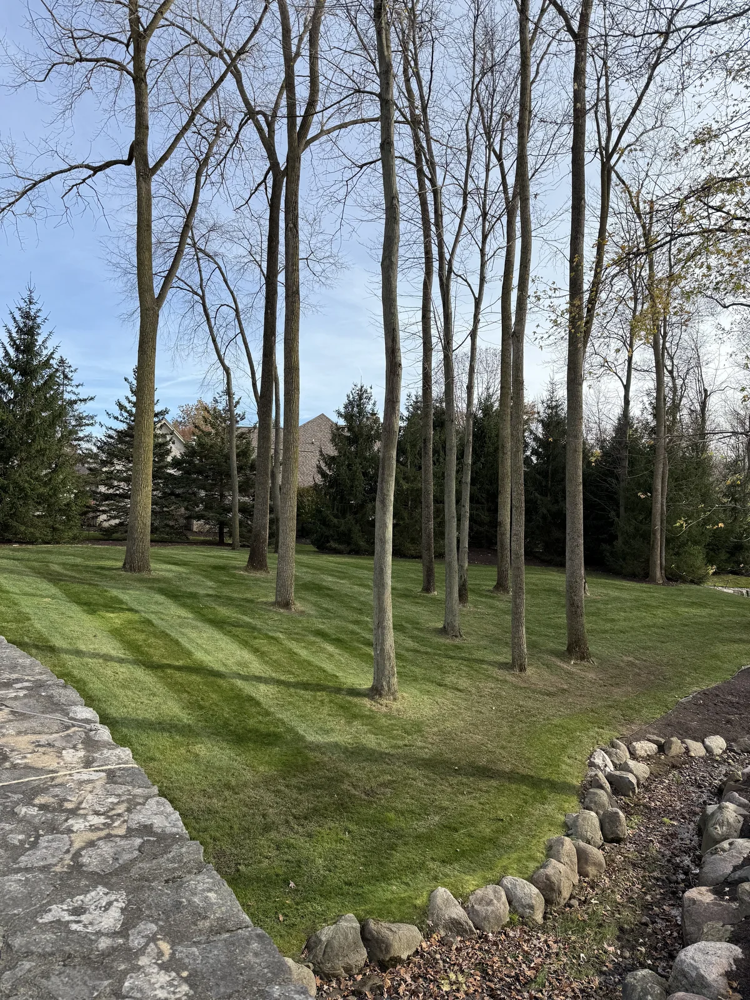
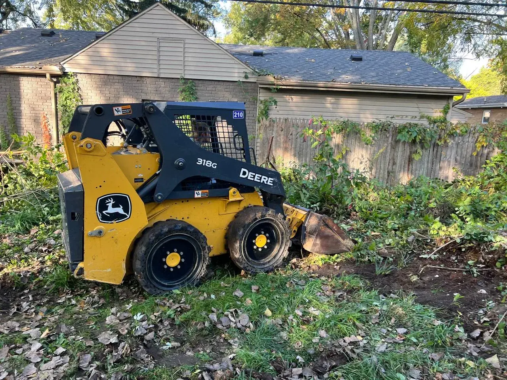
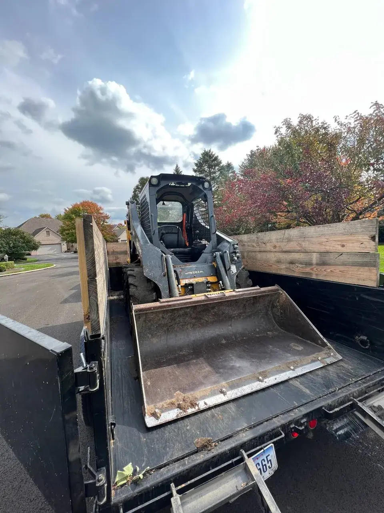

Fall + seasonal cleanups
Leave the leaves to us.
Request a free estimate for fall cleanup: leaf removal, landscape bed cleanouts, mulch refreshes, and yard debris hauled away. Local crews, one visit, done before winter.
Great work at a fair price. They did what they said they were going to do, when they said they would do it.Richard Hansen
A lot of companies tell you what they are going to do. This company far exceeded their word.jon mercurio
Attention to detail was 2nd to none!Adam Raider
They did an excellent job and completed the same day. I would highly recommend them.Teresa Thompson
10/10 Company, the boys made my house look great. Customer Service is great, best deal on the market.Alejandro Urrea
Great work very accommodating and extremely professional will definitely have them do all my future work.Pete Detgen
Great, professional group of guys!Josh Johnson
They did a fantastic job for me. I will recommend them to colleagues.Dominic Urquiola
Fast and reliable. Ty did excellent work and very reasonable cost. I would not hesitate to suggest him to others.Larry Calcamuggio
Amazing service every time and prompt to all appointments.CJ Miller
Fast free estimate
Request My Cleanup Estimate
Share the service, property location, timeline, project notes, and photos in the secure form. The Terramorph team receives the request directly and can follow up with the right next step.
Takes about a minute
- Your name, phone, and email
- Property address and ZIP code
- What the project needs and your timeline
- Photos of the area, if you have them
Opens Terramorph's secure Jobber request form. No account needed.
Would rather talk it through?
Call 419-873-6801This is for you if
Leaves, dead perennials, and summer overgrowth pile up fast in Northwest Ohio, and what sits on the lawn through winter smothers the grass underneath.
- Leaves covering the lawn or beds
- Overgrown or dead plants in the landscape beds
- Mulch faded, thin, or full of debris
- Sticks, brush, and yard debris that need hauling
What Terramorph checks
Terramorph crews blow, rake, and haul the leaves, cut back the beds, edge and refresh mulch, and leave the property clean and ready for the season.
Why request now
One crew, one visit, no weekends lost.
Wood and Lucas County homeowners get the whole property handled in a single scheduled stop.
Start My Free AssessmentProject photos
Fall cleanups by our crews.







Customer Reviews
Homeowners describe responsive service and dependable follow-through.
Read what local customers say about Terramorph’s communication, scheduling, crew, and finished work.
★★★★★“We are absolutely thrilled with the work Brad and his team completed! They completely redesigned our flower beds, providing us with a potential layout drawing, guiding us in selecting the right flowers, and executing everything perfectly. Besides the excellent craftsmanship, Brad and his team are genuinely kind and considerate.”
— Kate Vallerand
★★★★★“Ty and his crew are a great group of young professionals. Their work was well planned and executed with great attention to detail. I would not hesitate to recommend them for any level of landscaping project you may have.”
— R.J. Rajner
★★★★★“Terramorph did an outstanding job from start to finish. The team was professional, punctual, and paid close attention to every detail. They transformed the property with high-quality work, and the results exceeded my expectations.”
— Jack Higgins
★★★★★“I don’t usually leave reviews, but Terramorph honestly deserves one. These guys just get it. You can tell right away they actually care about what they’re doing, not just trying to rush through a job.”
— Altur Earth
★★★★★“Great work at a fair price. They did what they said they were going to do, when they said they would do it. Fast, friendly. Will definitely use them again.”
— Richard Hansen
★★★★★“A lot of companies tell you what they are going to do. This company far exceeded their word.”
— jon mercurio
★★★★★“Brad Porter and his crew are great! Before hiring them I had 3 different quotes and I am so glad I went with him. Military friendly, Highly recommend!!!”
— JeanCarlo Rivera
★★★★★“I am so impressed with Ty and Terramorph. I called on a Monday and they did the landscaping on Friday. It looks fantastic. A great group of hard working young men. Would recommend to everyone.”
— Barb Flowers
★★★★★“The other day when they mowed my lawn not only did they do a great job removing the weeds from the cracks in my driveway, they also took the time to pick up my trash cans that had fallen over! They are quick, efficient, and very easy to work with.”
— Adam Schmidbauer
★★★★★“We had a crew out to clean out some very overgrown and junk filled corners of the yard. They did great and were friendly and efficient. Would definitely hire them again.”
— Nat B
Questions homeowners ask
Quick answers before you request an estimate.
Why homeowners trust Terramorph
Local outdoor work backed by reviews, project photos, and clear next steps.
Customer feedback, BBB accreditation, completed-work photos, and Northwest Ohio experience give homeowners useful context before requesting an estimate.
★★★★★“10/10 Company, the boys made my house look great. Customer Service is great, best deal on the market.”
— Alejandro Urrea
★★★★★“Great work very accommodating and extremely professional will definitely have them do all my future work.”
— Pete Detgen
★★★★★“Bravo to the young men who took care of my mother’s yard. Thank you so much. Mom is really happy.”
— Patrick Walker
Ready for the next step?
Send the property details or call Terramorph directly.
The secure request form keeps your contact information, service need, location, timeline, and photos together for follow-up.
Local customer feedback
See why homeowners call Terramorph for the next project.
★★★★★“They did an excellent job and completed the same day. I would highly recommend them.”
— Teresa Thompson
★★★★★“10/10 Company, the boys made my house look great. Customer Service is great, best deal on the market.”
— Alejandro Urrea
★★★★★“Great work very accommodating and extremely professional will definitely have them do all my future work.”
— Pete Detgen